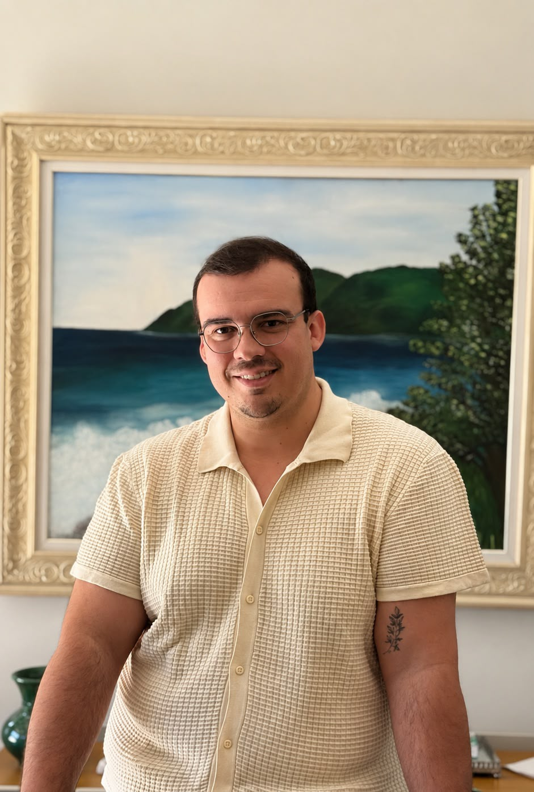

Cuidado com o desenvolvimento do seu filho, do jeito dele
Sou o Leandro Carvalho, psicólogo clínico e analista do comportamento. Atendo crianças e adolescentes, com foco em altas habilidades e superdotação, TDAH e TEA, sempre junto com a família.

Prazer, eu sou o Leandro
Sou psicólogo clínico e analista do comportamento, com atuação voltada para crianças e adolescentes. Meu trabalho é entender como cada um aprende, sente e se relaciona, e transformar isso em caminhos práticos para o dia a dia.
Tenho foco em altas habilidades e superdotação, TDAH e TEA. Sou sócio da Clínica Calum, em São João da Boa Vista, e idealizador do projeto AHSD em Pauta, que leva informação sobre altas habilidades para famílias e escolas.
Nas sessões uso brincadeiras, jogos e recursos lúdicos, porque é assim que a criança se expressa melhor.
A família junto
Pais e responsáveis recebem orientação para continuar o trabalho em casa.
Ciência no cuidado
Intervenções baseadas na análise do comportamento, com objetivos claros e acompanhamento da evolução.
Sigilo e respeito
Um espaço seguro para a criança e para o adolescente, como determina o Código de Ética da profissão.
Como posso ajudar
Algumas das demandas mais comuns no consultório. Se a sua não estiver aqui, pode perguntar mesmo assim.
Altas habilidades e superdotação
Identificação e acompanhamento de crianças com potencial acima da média, que muitas vezes também enfrentam desafios emocionais e na escola.
TDAH
Estratégias para atenção, organização e controle de impulsos, em casa e na escola, junto com a família.
TEA
Desenvolvimento de comunicação, habilidades sociais e autonomia, respeitando o ritmo de cada criança.
Ansiedade infantil
Medos, preocupações excessivas e dificuldade de se separar dos pais podem ser trabalhados de forma leve.
Tristeza e depressão na infância
Na criança, a depressão nem sempre aparece como tristeza. Irritação e isolamento também merecem atenção.
Orientação aos pais
Encontros com a família para lidar com birras, limites, rotina e as dúvidas do dia a dia.
Altas habilidades e superdotação
Ter altas habilidades não significa ir bem em tudo. Muitas crianças superdotadas se sentem diferentes, se entediam na escola ou têm emoções intensas. Entender esse perfil muda a forma como a família e a escola apoiam essa criança.
Pedir informações- Aprende muito rápido ou faz perguntas muito profundas
- Se entedia na escola ou não se encaixa na turma
- Emoções intensas, perfeccionismo ou medo de errar
- Orientação para a família e para a escola
Como começar
Mande uma mensagem
Pelo WhatsApp, conte a idade da criança ou do adolescente e o que tem preocupado a família.
Conversa com os pais
O primeiro encontro é com os responsáveis, para entender a história e as necessidades.
Início do acompanhamento
Montamos juntos um plano com objetivos claros e acompanhamos a evolução.
Clínica Calum
São João da Boa Vista, SP
Vamos conversar?
Se algo no desenvolvimento do seu filho tem chamado atenção, mande uma mensagem. Combinamos juntos o melhor horário.
Agendar pelo WhatsApp